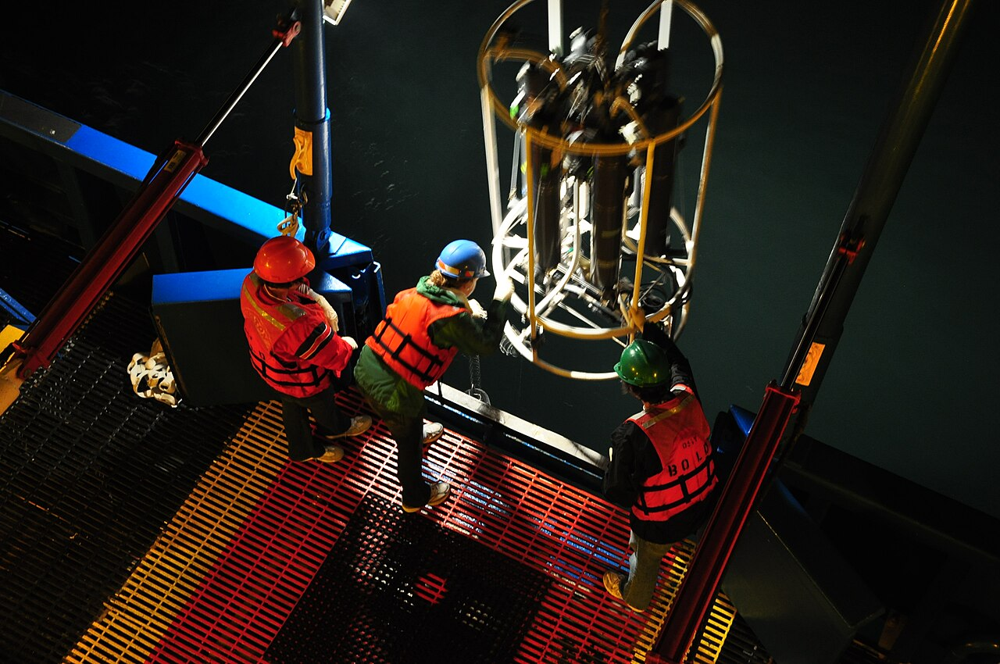

RRS Discovery · North Atlantic
Tracking North Atlantic carbon
Water sampling and ocean profiles to investigate how carbon is distributed through the water column.
Research question
How does the distribution of dissolved carbon vary with depth and between water masses?
Work at sea
Collect water samples at a series of stations and measure temperature, salinity and dissolved carbon through the water column.
Illustrative outputs
A set of ocean profiles and water samples for laboratory analysis, supporting comparisons between sampling locations.